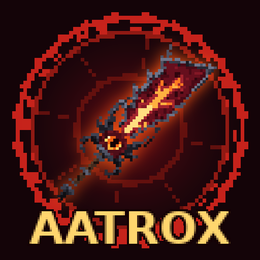
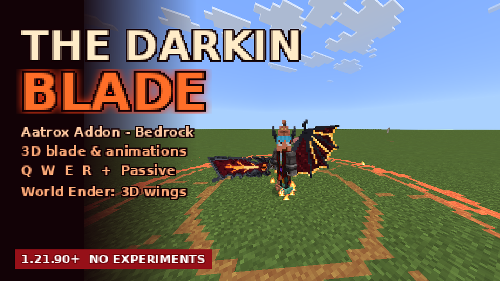

The Darkin Blade adds a fully animated 3D greatsword with a complete skill kit inspired by Aatrox from League of Legends: three-part Q, dash, chains, a passive and the World Ender transformation with 3D demon wings, horns and a zone of destruction. Everything is made in a Minecraft pixel art style: 29 custom particles, glowing lava veins, and a Darkin eye on the blade that blinks.
| Input | Skill | Effect |
|---|---|---|
| Right-click / tap | Q – The Darkin Blade | Three slashes (4 s to recast). Rune tiles show the area; the orange edge is the sweet spot: ×1.6 damage, knock-up and stun. The third cast slams the ground. |
| Sprint + attack | E – Umbral Dash | Dash where you look, leaving afterimages. |
| Sneak + right-click | W – Infernal Chains | Throw a fiery chain. If the target doesn't escape the binding circle in 1.5 s, it is pulled back and stunned. |
| Sneak + Jump | R – World Ender | Shockwave that knocks back and fears enemies, then transform for 10 s: +30% skill damage, +50% healing, Speed II, Strength I. |
| Normal attack | Passive – Deathbringer Stance | Every 8 s, your hit explodes for 8% of the target's max health and heals you. |
All damage dealt with the blade has 15% lifesteal. The bar above the hotbar shows which skill your next right-click will cast and every cooldown.
Type /scriptevent aatrox:help to show the guide again.
/give @s aatrox:darkin_bladeUpdating? Remove the old version from your world first, then activate the new one.
Every value (damage, cooldowns, ranges, PvP on/off, World Ender bonuses) lives in scripts/config.js in the behavior pack.
Fan-made addon inspired by Aatrox from League of Legends. All models, textures and particles are original Minecraft-style pixel art; no Riot Games assets are included. League of Legends and Aatrox are trademarks of Riot Games, Inc.